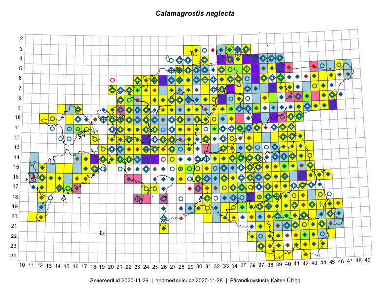

Calamagrostis neglecta
Uuendatud: 2016-12-02
Kaardile koondatud taksonid: Calamagrostis neglecta (Ehrh.) P.Gaertn., B.Mey. & Scherb.; Calamagrostis stricta (Timm) Koeler

Kaart põhineb 201 kirjel, neist vaatlusi 199 ja eksemplare 2. Taksonit on leitud 167 ruudust.
Kuvatud viited 20 esimesele andmebaasikirjele, ülejäänud PlutoFis
- Toomas Kukk, Thea Kull, Timo Luhamäe, Ott Luuk, Peedu Saar: 2015-06-28: 13-26: ala
- Toomas Kukk, Eerik Leibak: 2015-08-10: 09-14: ala
- Ott Luuk, Toivo Sepp: 2015-07-29: 09-32: ala
- Peedu Saar, Ott Luuk: 2015-06-21: 14-41: ala
- Ott Luuk, Peedu Saar: 2015-07-27: 11-35: ala
- Peedu Saar: 2015-07-04: 18-44: ala
- Peedu Saar: 2015-07-14: 15-38: ala
- Ott Luuk, Peedu Saar: 2015-08-12: 23-43: ala
- Toomas Kukk, Eerik Leibak: 2015-08-11: 09-16: ala
- Peedu Saar, Liina Oja: 2015-07-21: 06-44: ala
- Peedu Saar, Liina Oja: 2015-07-22: 08-45: ala
- Toomas Kukk, Eerik Leibak: 2015-07-29: 16-44: ala
- Tiit Hallikma, Toomas Kukk: 2015-06-10: 15-30: ala
- Peedu Saar, Liina Oja: 2015-07-24: 09-45: ala
- Peedu Saar: 2015-08-04: 14-36: ala
- Peedu Saar: 2015-08-10: 13-40: ala
- Peedu Saar: 2015-08-11: 13-41: ala
- Peedu Saar, Ott Luuk: 2015-08-12: 23-42: ala
- Peedu Saar, Ott Luuk: 2015-08-13: 24-42: ala
- Tiit Hallikma, Toomas Kukk: 2015-07-23: 07-41: ala